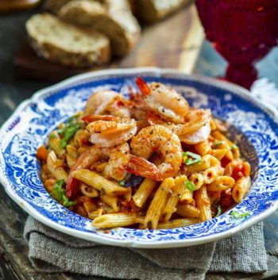

Krevetipasta

Koostisosad
| Koostisosad |
Kogus |
| Spagetid või makaronid |
500g |
| Oliiviõli |
1 sl |
| Küüslauguküüs |
1 tk |
| Rõõsk koor 35% |
2 dl |
| Basiilik |
Suur kimp |
| Tšillihelbed |
Näpuotsaga |
| Sool |
Maitse järgi |
| Kooritud keedetud krevetid |
400g |
Valmistamine
- Keeda makaronid soolaga maitsestatud vees "al dente."
- Samal ajal kuumuta pannil õli, lisa hakitud küüslauk ja kuumuta tasasel tulel pidevalt segades läbi.
- Lisa rõõsk koor ning tükkideks rebitud basiilik, kuumuta keskmisel kuumusel paar minutit.
- Lisa kooritud krevetid, sega läbi ja tõsta pott tulelt. Maitsesta kaste soola ja pipraga, soovi korral lisa tšillihelbeid